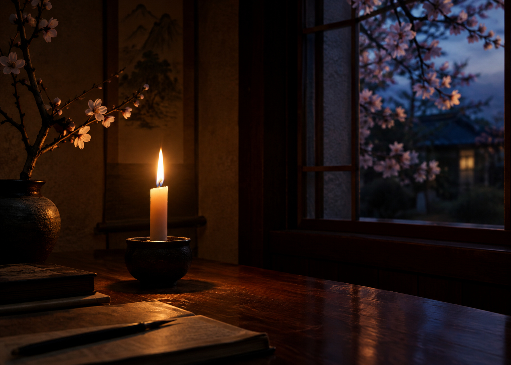

The light of a candle
Is transferred to another candle.
Spring twilight

Haikus focus on a brief moment in time,
juxtaposing two images, and creating a
sudden sense of enlightenment. A good
example of this is haiku master Yosa Busons
comparison of a singular candle with the
starry wonderment of the spring sky.